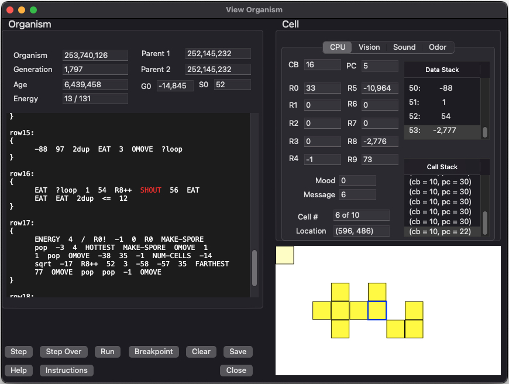
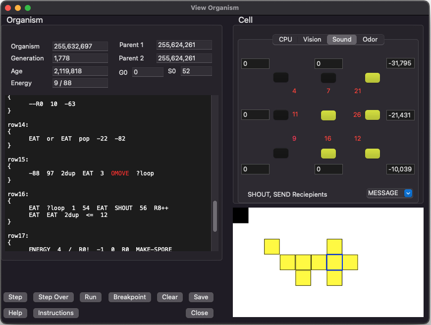

VOLVE 5.0
VOLVE 5.0
Examine Organism Dialog
When you double-click on an organism, this dialog will appear. This dialog shows the inner details of an organism.
The ORGANISM area of this dialog displays stuff common to the entire organism. The CELL area displays the stuff unique to that cell. To examine different cells, click on the cell you want to view.
ORGANISM
This section shows various details about the organism. The genetic program (which is shared among all the cells) is shown in the text control. The highlighted instruction is where the selected cell is currently executing.
- Organism ID: Every organism is assigned a unique 64-bit ID number. This ID increments as organisms are created. This field displays this organisms unique ID.
- Parent 1: ID value for the first parent (and only parent if this organism was created asexually).
- Parent 2: ID value for the second parent (if this organism was created sexually). It will be blank if this organism was created asexually.
-
Generation The generation of this organism all the way back to the first organism. We compute this field based on
the parents 'generation':
generation = MAX(parent1.generation, parent2.generation) + 1
- # of cells: The number of cells in this organism.
- # of living children: number of organism that have this organism as a parent.
- Age: The number of simulation steps this organism has survived through.
-
Energy: How much energy does this organism have? The first number is energy per cell. The second number is total
energy for the entire organism. Energy per cell is calculated by total_energy / number_of_cells.
Energy per cell is useful to see because the EAT, GROW, MAKE-SPORE instructions use it.
- G0: This is the simulation-wide global variable.
- S0: This is the per strain global variable.
CELL
This section shows the state of the cell you have selected in the display window. Use your mouse to select different cells. The current cell is highlighted with a blue rectangle.
These fields comprise the "execution context". Each cell has its own copy of these fields:
- Code Block: This specifies the code block currently being executed by this cell. Code block numbers begin at 0. Code block zero is normally labeled "main:", and subsequent code blocks are labeled "row1, row2, row3, ...".
- Program Counter: This is the instruction offset within the code block. This counter begins at 0. If program counter refers to the last instruction plus 1, then this cell has just reached the end of a code block.
- R0 - R9: General Purpose registers. Can be set with the instructions Rn!, R0!, R1!, R2!, ... and the cell can fetch a register value with the instructions Rn, R0, R1, R2, ....
- Mood: This is like a general purpose register. The cell can set this field by using the MOOD! instruction. Other cells can query our mood by using the MOOD instruction.
- Location: The grid location of this cell.
- Message: Like a general purpose register except other cells can set this field by using the SEND and BROADCAST instructions. This cell can fetch the value of this field by using the RECV instruction.
- Cell: The cell number within the organism.
- Data Stack: Like the Forth programming language, this stack is used to keep track of data items that the cell is using for computation. The top of this list box represents the top of the stack.
- Call Stack: Like the Forth programming language, this stack contains the call history. As code blocks are entered/exited this stack grows The top of this list box represents the top of the stack.and shrinks.
BUTTONS:
- Step: This button will simulate the universe for 1 step. The current instruction about to execute is highlighted. In this way you can observe the inner workings of a genetic program. (Function key: F7).
- Step Over: This button will simulate the universe for 1 step, but step over any subroutine calls. (Function key: F6).
- Run: Begin running the program (actually this begins simulating the whole universe). Stop when the cell dies, or when a breakpoint is reached. (Function key: F5).
-
Breakpoint: Insert a breakpoint at the current cursor position. Just select an instruction and press this button. A breakpoint will
be added (or removed). A breakpoint will show up as a vertical bar '|' next to the instruction.
Breakpoints only apply to the current cell being debugged. When you switch cells, the breakpoints are retained, and will be applied to the new cell. (Function key: F9).
- Clear Breakpoints: All breakpoints will be cleared. (Function key: F8).
- Instructions: This button will pop up a list of KFORTH instructions for your reference. Whatever instruction the cursor is pointing to will be displayed in the KFORTH Instruction dialog.
- Save: Save the current KFORTH program showing to a file.
Vision Tab
Pressing the [Vision] tab will display the following dialog. This dialog shows all the current vision data that will be used by the KFORTH instructions pertaining to vision (LOOK, WHAT, WHERE, NEAREST, FARTHEST).

The distance to each cell in the 8 directions are shown in red.
Choose from these items in the combo box:
- LOOK: Reveals the type of object of seen in that direction
- SIZE: Reveals the size of the organisms surrounding this cell
- TEMPERATURE: Reveals the amount of energy of the organisms surrounding this cell
Sound Tab
Pressing the [Sound] tab will display the following information. This tab shows what the cell is "hearing". The MESSAGE and MOOD registers for the cells surrounding the current cell are shown. The instructions for sound are SAY, SHOUT, SEND, MOOD, RECV, MOOD!.
The distance to each cell in the 8 directions are shown in red.
Choose from these items in the combo box:
- MESSAGE: Reveals the message register of each cell seen
- MOOD: Reveals the mood register of each cell seen
Odor Tab
Pressing the [Odor] tab will display the following information. This tab shows what the cell is "smelling". This screen shows the odor values surround the current cell. The SMELL and EXUDE instructions deal with odor.
KFORTH Instruction Help Dialog
If you click on [Instructions] the following pop-up dialog will appear. This is for reference only.